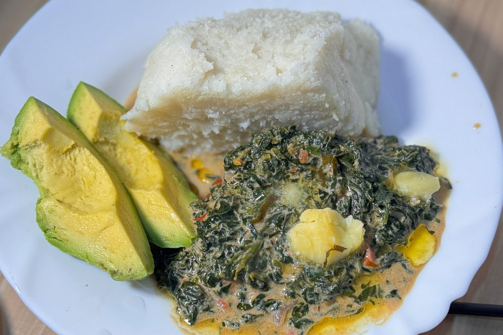

Milk Greens: A Taste of Kisumu
Recipe & Narrative
There are dishes that arrive at the table looking almost ordinary, yet somehow manage to tell you everything about a place. Milk greens is one of those dishes.
In Kisumu and across western Kenya, leafy greens are not simply a side dish. They are part of the rhythm of everyday cooking, something gathered, chopped, cooked, and put on the table alongside the foods that make a meal feel like home. And when those greens meet fresh milk, something beautiful happens.
I talked to Laura as she prepared the dish with her dinner, she said the milk softens the greens, rounds out their bitterness, and gives them a gentle richness without turning them into the heavy, cream based vegetables many of us know in the West. Onions, a little oil, salt, greens, and milk can be enough.
That's what I love about food like this. It doesn't need a long ingredient list or a fancy presentation. It needs good greens, good milk, and someone who understands that cooking is sometimes about knowing when to leave well enough alone.
Laura said depending on what is available, the dish can be made with different indigenous vegetables or greens. The exact combination can change from kitchen to kitchen, which is part of the beauty. This isn't restaurant food trying to convince you it's traditional. It's everyday food that became traditional because people kept making it.
Serve it with ugali or rice, perhaps some beef, fish, or another simple accompaniment, and suddenly you have something much bigger than a bowl of vegetables. You have a taste of western Kenya, and that's the thing about food in Kisumu, sometimes the dishes that say the most are the ones that don't have to shout.
Laura's Milk Greens Recipe
Serves: 2
Prep Time: 10 minutes
Cook Time: 20–25 minutes
Total Time: 30–35 minutes
Ingredients
For the Greens
- 4 cups chopped African nightshade, packed
- ½ cup water
For the Milk Greens
- 2 tablespoons cooking oil
- ½ teaspoon salt, plus more to taste
- ½ medium onion, finely chopped
- 1 Royco cube
- 1 medium tomato, diced
- 1 tablespoon tomato paste
- ½ cup milk
- 1 cup milk
Method
- Cook the greens. Place the chopped greens in a pot with ½ cup of water. Cover and cook over medium heat until the greens are tender, about 5 to 8 minutes. Drain completely and set the greens aside.
- Build the base. Heat 2 tablespoons of cooking oil in a pan over medium heat. Add the salt, chopped onion, and Royco cube. Cook until the onion softens and becomes fragrant, about 3 to 4 minutes.
- Add the tomatoes. Add the diced tomato and 1 tablespoon of tomato paste. Stir well and cook for another 3 to 5 minutes, allowing the tomatoes to soften and the tomato paste to cook into the mixture.
- Add the greens. Add the drained greens to the pan. Mix thoroughly so the greens are coated with the tomato and onion mixture. Cook for 2 to 3 minutes.
- Add the first milk. Pour in ½ cup of milk and stir. Allow the mixture to simmer gently until some of the liquid cooks down.
- Add the remaining milk. Pour in the remaining 1 cup of milk and stir well. Reduce the heat to medium-low and allow the greens to simmer uncovered, stirring occasionally.
- Cook until thick. Continue cooking until the milk has reduced and the greens have a thick, creamy consistency, about 8 to 12 minutes. Taste and adjust the salt if needed.
To Serve
Serve the milk greens hot, alongside ugali, rice, beans, beef, fish, or whatever protein you like. The creamy greens are especially good with something that can soak up the sauce.
Laura's Note
The key is patience. Don't rush the milk. Let it slowly reduce until it clings to the greens rather than leaving them swimming in liquid. That's where the dish comes together, the bitterness of the greens, the sweetness of the tomato and onion, and the gentle richness of the milk becoming one.
In closing I want to say good food can be a cultural experience, and I want to thank Laura for sharing part of her culture with me and my audience.
— Chef Dumela